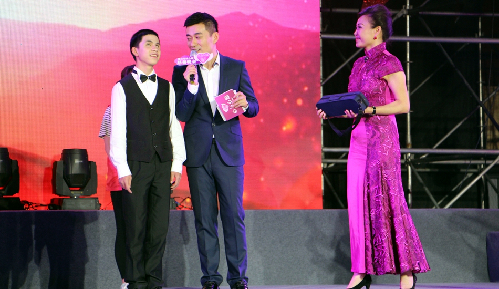

2015“心与心愿”重庆助残众筹慈善晚会举行
桂电志愿者网 日期：2015-05-25 来源：

5月17日，第二十五个全国助残日，2015“心与心愿”重庆助残众筹慈善晚会在市残疾人文体中心拉开帷幕，1元微力量爱心众筹活动同时启动，市民登录爱心微店，点击购买1元爱心，就能向“心与心愿”助残公益项目捐赠一元钱。
“心与心愿”助残公益项目将主要帮扶三类人群，包括有志的残疾青少年群体、就业创业残疾人群体和自闭症儿童群体。该项目是市残联联合团市委于2015年4月起在全市开展关爱残疾人的品牌活动。项目突出“个性化”征集和“点对点”满足两大特点，变关爱残疾人由“普遍化”向“个性化”转变，由“给予型”向“需求型”转变。在每年暑假期间，通过大学生“三下乡”的方式，广泛征集残疾人个性化的心愿和梦想，发动社会力量点对点帮助残疾人实现心愿和梦想，建立社会助残公益项目新常态。
慈善晚会现场，1000多名观众通过认捐卡和手机客户端，向公益项目现场捐款。晚会结束后，市民也能够持续地参与到该公益项目当中。
具体参与方式为：市民用微信扫描“心与心愿”1元微力量二维码，选择“心与心愿”的商品数量，点击“立刻购买”，填写收货人相关信息，选择相应的支付方式“提交订单”购买，市民还可点击“找人买单”分享给朋友一起购买“心与心愿”爱心商品。捐赠的善款将进入重庆市残疾人福利基金会的微店账户，善款将用于帮扶有需要的残疾人。
市人大常委会副主任周旬，副市长、市残工委主任刘强出席慈善晚会。

【责任编辑：李博晶】